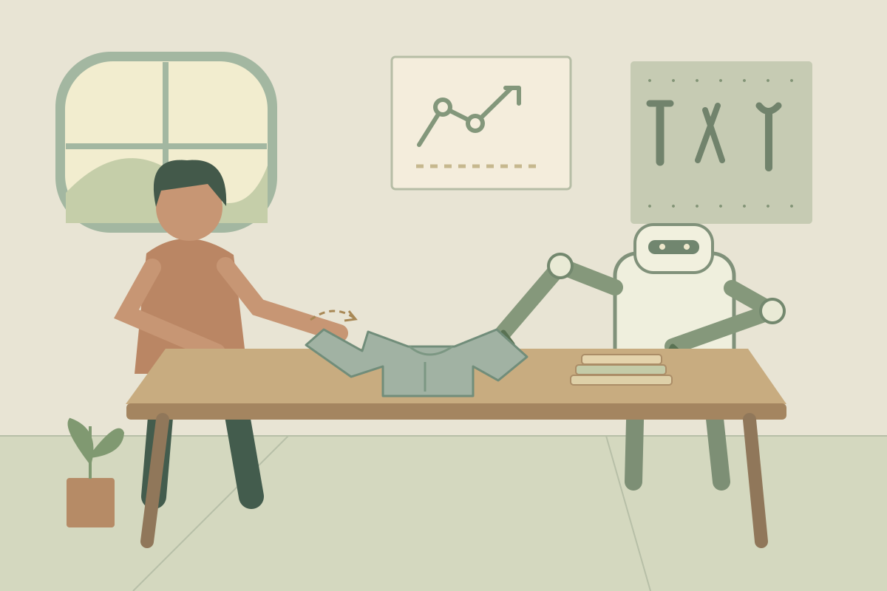

08:00
THE SHARED KITCHEN

Breakfast is still a team effort.
Mr. Chen cannot easily lift a full pot. With a little physical help, he can still cook with us, not just wait to be served.
A small moment you might notice
Mr. Chen changes the recipe halfway through. We pause the robot and adjust the steps together. The meal is not perfectly repeatable, and that is part of the point.
14:00
THE WORKSHOP

Sometimes, the robot is the learner.
A robot folds flat towels but needs help with a tangled shirt. As a robotics student, I imagine progress as learning to work together, not a machine that already knows everything.
Where does the internet fit?
Residents find beginner sessions and share practical notes on the community website. Paid local technicians maintain the robots and help teach the sessions.
Visit the community noticeboard →18:30
THE COURTYARD

Less carrying. A little more staying.
The robot takes dishes back to the kitchen. Neighbors finish their conversation. The point is not to remove every task, but to leave more room for each other.
What if someone enjoys doing it by hand?
They still can. Gardening, cooking, and making things can be pleasures, not problems to automate away.